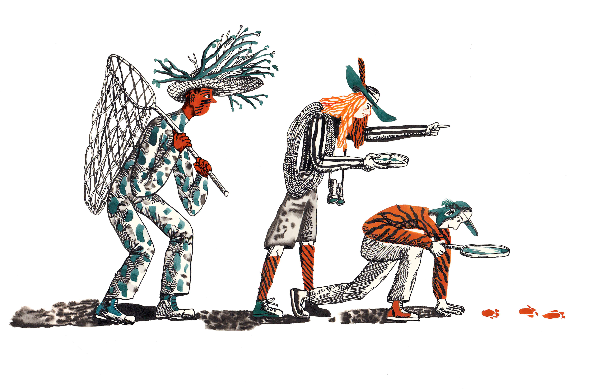

If you want tiger soup, it is best to first focus on catching the tiger.
It is a common mistake to spend too much time searching for fresh vegetables and unique spices. These are easy and fun to do. While these activities are certainly essential in making a savory soup, the hard part is getting your hands on a tiger. No tiger…NO tiger soup!
When change comes to an industry it is normal for marketing people to continue doing what they are used to doing. That’s easier and it’s human nature.
When the rules change, as they just have, it is imperative to look straight at the depth of the problem and to recognize that new ways of thinking may be required to restart the engines of commerce. That is catching the tiger.